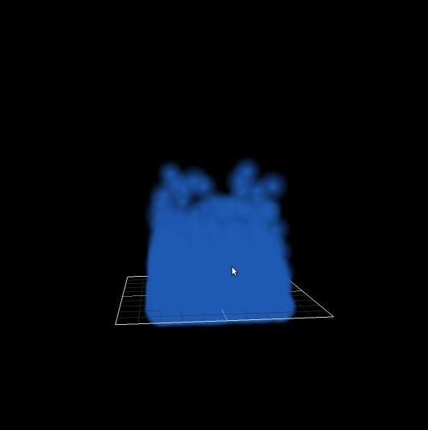

Fluid simulation in OpenGL
Time Span : February-March 2015, 2 weeks
Team Size : 1
Technologies : C++ OpenGL
Estimated Development Time : 35 Hours
Source : https://github.com/lejonmcgowan/SPHOpenGL
| Key | Function |
|---|---|
| xXyYzZ | changes the graviy of the world. Influences the direction the fluid will "fall" to |
| ws | Controls the Z boundaries of the rectangular prism the water is being stored in |
| ad | Controls the X boundaries of the rectangular prism the water is being stored in |
| space bar | Start/pause the simulation |
My project worked with a prinicple known as Smoothed Particle Hydrodynamics (SPH), a way to use particles to model and simulate fluids. More details of implementation can be found here
Like other fluids, SPH relies on a mathmatical and programmatic way of interpreting the Navier-Stokes equation, which can be thought of as the fluid's version of Newton's 2nd law. the formula is shown here
The math is a bit involved (the links above help guide you the right way), but SPH comes down to changing the desities and pressures of particles based on the neighboring particles and how far away they are from each other. The Main equation in question is here:
Most of the variables and terminology are general algebra (and the gradient, vector calculus), but special attention needs to be given to what is known as a smoothing kernel. The smoothing kernel is a specialized function that tells the simulation how much "influence" a neighboring particle has on the particle in question. The kernel and its derivations (gradients and Laplacians in the vector calulus world) are the heart of calulcating the densities and pressures.
Implementing the simulation is actually very similar to other time-stepped approaches. It is a matter of modeling the appropriate variables (in this case, viscocity, density, and other important properties had to be added into my Particle structure), adding in forces, and using a time step to integrate in the steps the particles take through the simulation. The fluids formulas get a bit trickier than traditional, newtonian, physics, but the methodology remains the same.
This was an important optimization for my program. Spatial partitioning is basically taking one big structure of data at various locations, and splitting it up based on where it is in space. The link provided describes it as a parallel sorting a "1d" grid by position and using a binary search.
A poper spatial partition can have varying levels of depth, but a simple level 1 split into width * height * depth partitions proved more than enough for satisfaction. The partitioning took me from rendering 200 particles (now my default value when run) at some 5 frams per second:
"Only" 200 particles
to my 2012 laptop (2012 Intel 3rd Generation, using integrated graphics) being able to handle 1500 particles at some 10FPS, all other factors unchanged:
1500 particles
The main generates a vector of particles, a class that contains the the properties needed to model a partical in SPH and render a colorable sphere to the screen. These particles are then passed into the SPHSolver class and partitioned accordingly by the GridManager propertiy. The Gridmanager contains a vector of GridElements, which just contain a partition of the Particles in a vector.
When the update is initiated, the SPH runs through it's update method, resets the particle and grid values, and updates the values accordingly. the SPH formula as seen above makes use of quite a few summations, and the way I request grid elements (as if it is in a 3d space) means there are many triple for loops to iterate through the grids. Splitting up these functions made the overall class much more readable.
The relevant Kernel functions are also kept in their own respective class. despite the difficult theory behind making proper kernels (and which on makes "proper" physics), the functions here are fairly simple arithmatic. It really is another one of those cases where the mathmaticians to 99.9% of the work for the programmer
even a naive, grid partition scheme was able to make the program perform much faster. What struggled to get 100 particles moving smoothly by brute force caused the program to render some 1000-1200 on my computer (with a 2012 Mobile graphics card) at a decent framerate. There is still plenty of room for improvement though. I couls have made use of instancing on OpenGL's end to greatly decrease the burden of rendering. I could have also used a better partitioning scheme to further reduce the number of neighbors to check per particle.